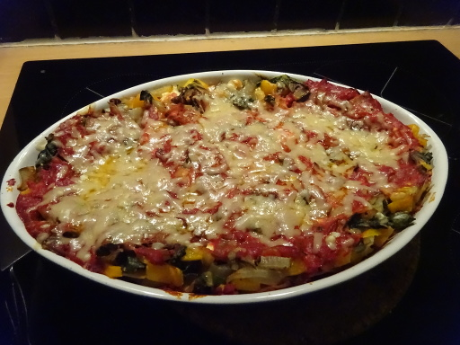

Mangold-Lasagne mit Schafskäse

- Zubereitung: ca. 40 Minuten
- Backzeit: ca. 40 Minuten
- Für 4 Portionen
Zutaten
- 1 Kopf Mangold
- 12 Lasagneplatten, mittelgroß
- 1 Zwiebel
- 3 Knoblauchzehen, fein gewürfelt
- 1/2 Paprikaschote, gelb
- 200 g Schafskäse
- 1 EL Pinienkerne
- 500 ml Tomatenpüree
- 2 EL Tomatenmark
- 8 EL Olivenöl
- 1 TL Thymian, getrocknet
- 50 g Parmesan, gerieben
- Muskat
Zubereitung
- Für die Tomatensoße 3 EL Olivenöl erhitzen, das Tomatenmark darin anbraten und ca. die Hälfte der Knoblauchwürfel dazugeben. Kurz mitbraten und mit den passierten Tomaten aufgießen. Hitze auf kleinste Stufe stellen und mindestens 20 Min. köcheln
lassen. Mit Salz, Pfeffer und Zucker abschmecken.
- Für die Mangold-Schafskäse-Masse den Mangold waschen und putzen. Zuerst die weißen Stiele in kochendem Salzwasser 5 Min. blanchieren und dann die grünen Mangoldblätter dazugeben. Alles weitere 3 Min. blanchieren, dann abgießen und mit kaltem Wasser
abschrecken. Gut ausdrücken und klein hacken. Schafskäse zerbröseln, Paprikaschote in kleine Würfel schneiden, Pinienkerne anrösten. 3 EL Olivenöl erhitzen und die Zwiebeln und den restlichen Knoblauch darin anbraten. Dann die Paprikawürfel, den
Mangold und den Schafskäse dazugeben. Mit Salz, Pfeffer, Muskat und Thymian würzen. Pinienkerne dazugeben und alles gut vermengen.
- Nun 2 EL Olivenöl in einer Auflaufform verteilen und deren Boden mit Lasagneplatten auslegen. Etwas Tomatensoße darauf verteilen. Nun abwechselnd Lasagneblätter und Mangold-Schafskäse-Masse darauf schichten. Mit Lasagneplatten abschließen. Auf das
Ganze die Tomatensoße großzügig verteilen.
- Im vorgeheizten Backofen bei 180°C Umluft ca. 30 Minuten im Rohr lassen. Dann mit dem Parmesan bestreuen und weitere 10 Minuten überbacken.
Quelle: https://www.chefkoch.de/rezepte/585511157717791/Mangold-Lasagne-mit-Schafskaese.html